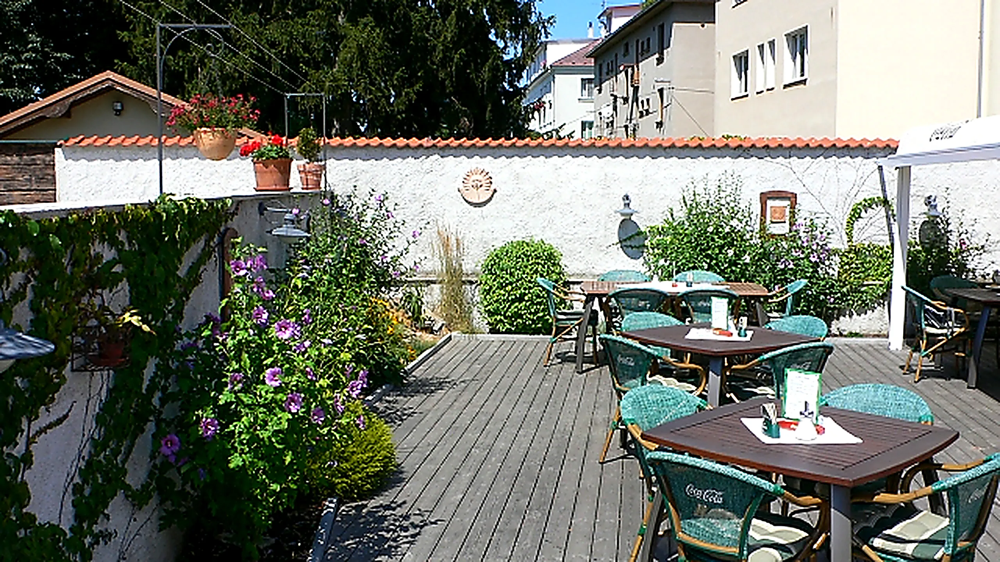
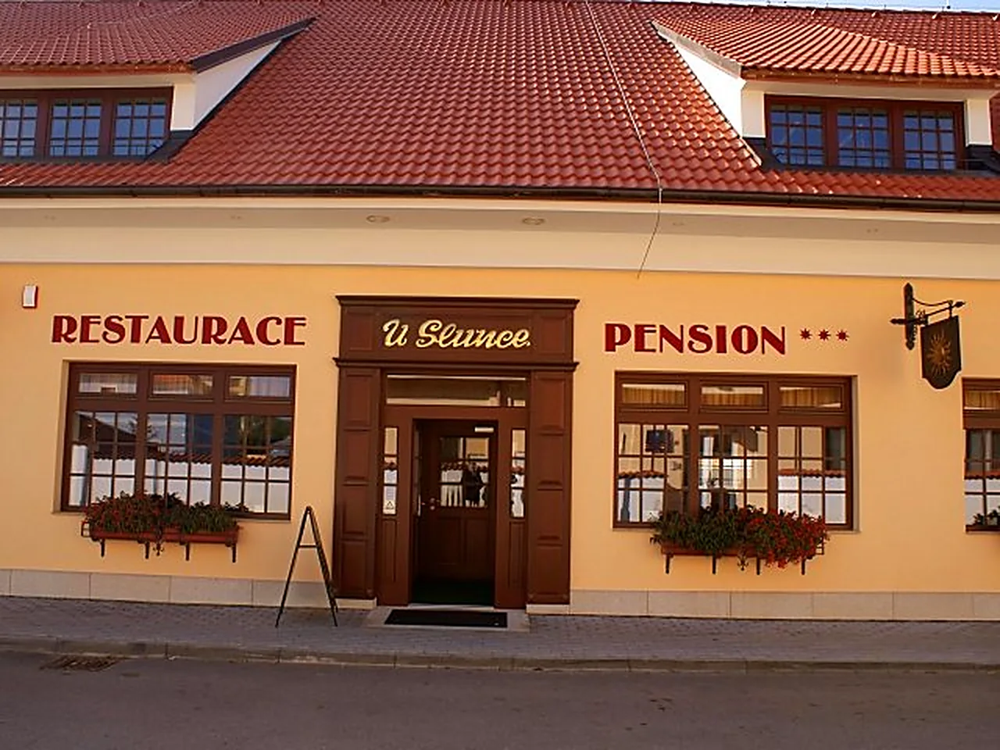
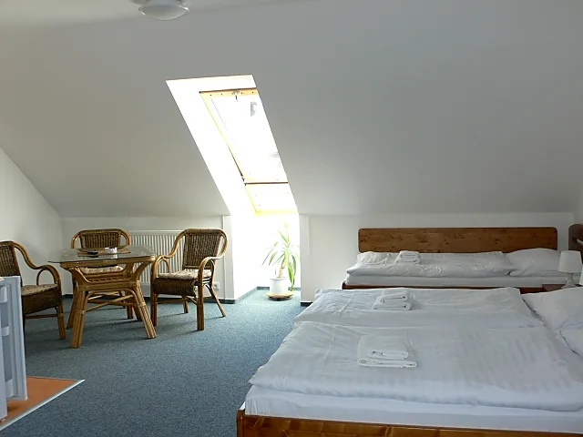
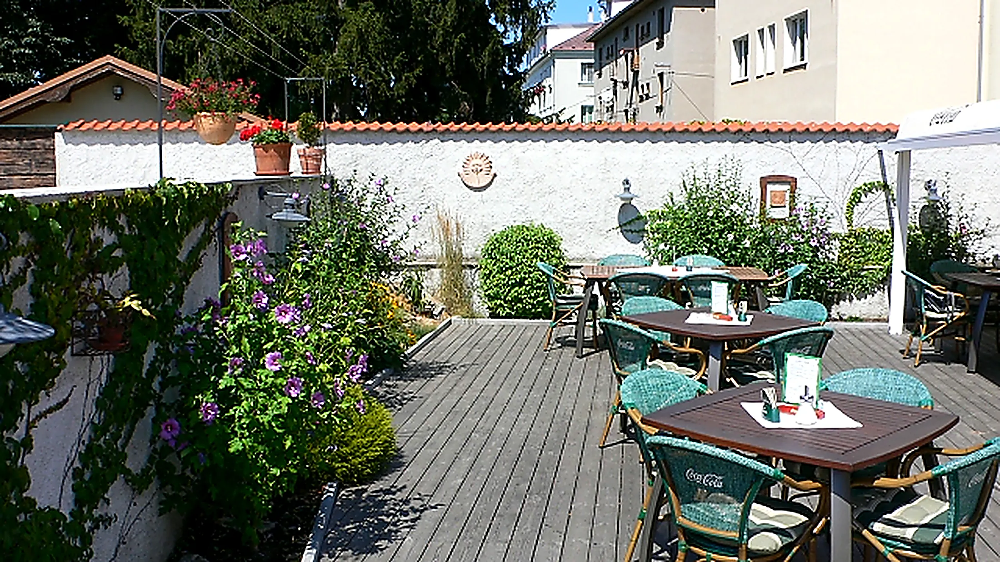

Restaurace
Česká kuchyně, minutky, hotová jídla a rybí speciality. Dost místa pro přátele i pro oslavu.
Poznat restauraci
U Slunce najdete pod jednou střechou restauraci se stylovým barem a penzion s pokoji i apartmány. Areál je vlastní, klidný a stranou ruchu, přesto jen kousek od rybníka Svět a lázní Aurora.
Vaříme českou klasiku, minutky i čerstvé rybí speciality z třeboňských rybníků. Kdo spěchá, vybere si z nabídky hotových jídel. Kdo má čas, posedí na zahrádce nad sklenicí Bernarda.


Česká kuchyně, minutky, hotová jídla a rybí speciality. Dost místa pro přátele i pro oslavu.
Poznat restauraci
Točený Bernard a Regent, zahraniční lahvová piva, vína, rumy a whisky ve stylovém baru.
Nápojový lístek
Pokoje a apartmány s klimatizací, kuchyňkou a vlastní koupelnou. Sedm pokojů má balkon.
Ubytování a ceny
Čerstvé ryby z třeboňských rybníků, točený Bernard a klid vilové čtvrti.
Restaurace U Slunce
Aurora pět minut chůze, Berta deset minut. Wellness, sauny i tobogán v obou lázních.
Naučné okruhy okolo rybníka Svět, cyklostezky Třeboňska. Kolárna a nabíjení elektrokol u nás.
Zámek, Schwarzenberská hrobka a náměstí. Deset minut pěšky od penzionu.


Stůl i pokoj rezervujeme telefonicky. Rádi poradíme s výběrem a s tím, co v Třeboni stihnout.